Introdução
O Google Earth Engine (GEE) é uma plataforma poderosa para análise de dados geoespaciais em escala planetária. Com acesso gratuito a décadas de imagens de satélite e datasets ambientais, o GEE democratiza a análise de sensoriamento remoto e permite processamento massivo de dados na nuvem.
Neste tutorial, você aprenderá o processo completo desde a criação da sua conta até a visualização do seu primeiro asset. Vamos passar por cada etapa da configuração do projeto no Google Cloud, ativação da API do Earth Engine e upload de um shapefile para visualização no Code Editor.
O que você vai aprender
- Registrar um projeto não comercial no Google Earth Engine
- Configurar e ativar a API do Earth Engine no Google Cloud
- Fazer upload de shapefiles como assets no GEE
- Escrever e executar seu primeiro script JavaScript no Code Editor
- Visualizar dados geoespaciais no mapa interativo
Pré-requisitos
- Conta Google: Você precisará de uma conta Google válida para acessar o GEE
- Credenciais acadêmicas ou institucionais: Para registro não comercial, você deve estar vinculado a uma instituição de ensino ou pesquisa
- Shapefile de exemplo: Tenha um shapefile (.shp, .shx, .dbf, .prj) pronto para upload
- Navegador atualizado: Chrome, Firefox ou Edge em versão recente
Atenção
O processo de registro pode levar alguns minutos para ser aprovado. Certifique-se de fornecer informações precisas sobre sua instituição e objetivos de pesquisa para evitar rejeição do cadastro.
Passo a Passo
Acessar a Plataforma
Ação: Acesse https://code.earthengine.google.com/
Detalhe: Na tela inicial de boas-vindas do Earth Engine, clique no botão azul "I WANT TO REGISTER A NEW PROJECT" para iniciar o cadastro.
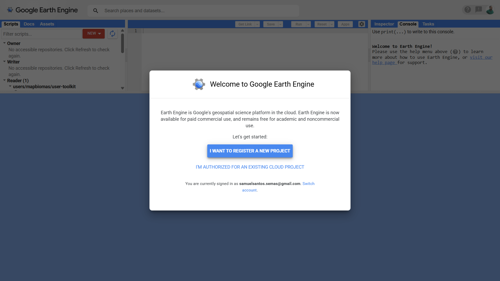
Acessar Página de Projetos
Ação: Escolher criar ou selecionar projeto.
Detalhe: Após clicar em "I WANT TO REGISTER A NEW PROJECT", você será direcionado para a página de projetos do Google Cloud. Clique no botão indicado para criar um novo projeto ou selecionar um existente.
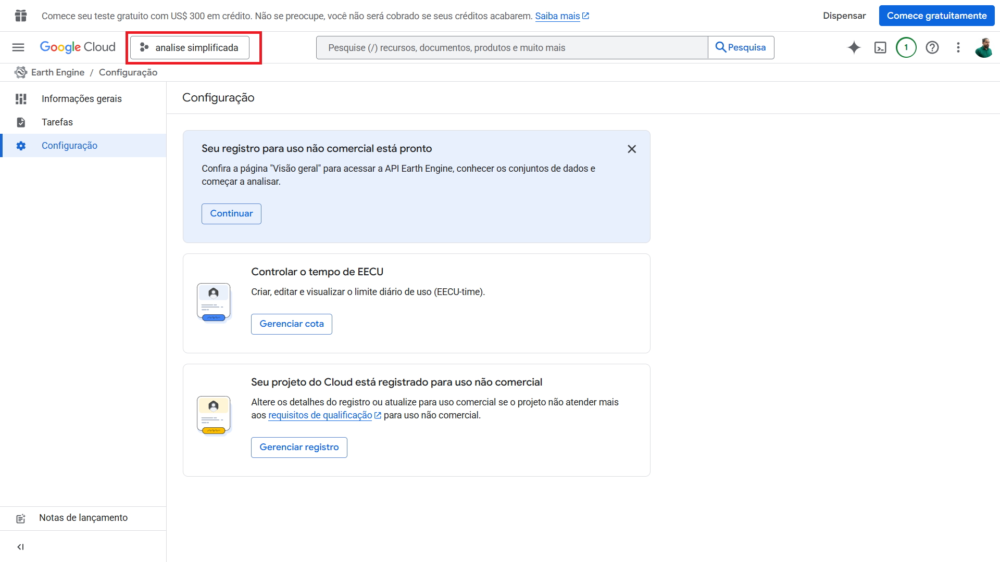
Criar o Projeto no Google Cloud
Ação: Criar o "container" do projeto.
Detalhe: Antes de configurar o Earth Engine, precisamos criar o projeto. Na tela de "Novo projeto", dê um nome ao seu projeto (ex: My Project 18075 ou algo como analise-simplificada). Em "Local", mantenha como "Nenhuma organização". Clique no botão azul "Criar".
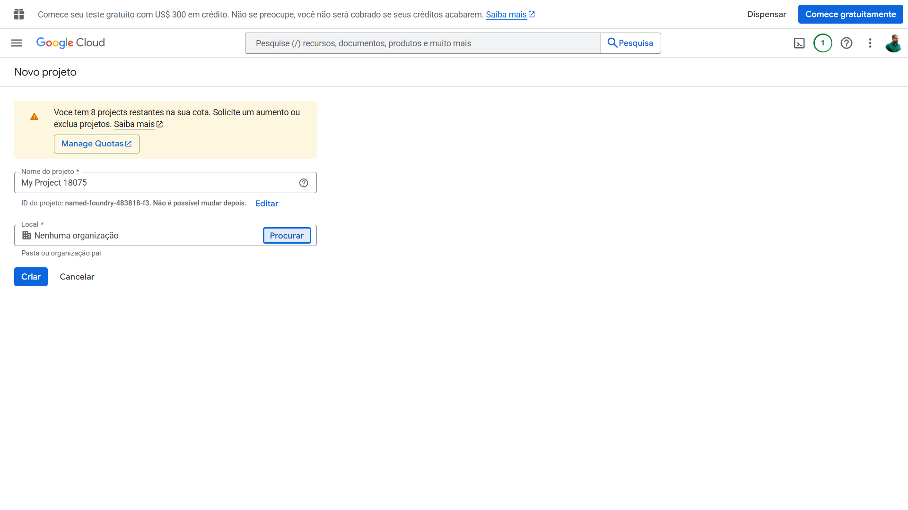
Escolher a Licença Não Comercial
Ação: Definir o tipo de conta.
Detalhe: Com o projeto criado e selecionado (verifique se o nome dele aparece no topo, onde diz "analise simplificada"), vamos definir o tipo de conta. Você verá a tela de Configuração. Ignore a opção de cima ("Registrar para uso comercial"). Vá na opção de baixo: "Confira se você se qualifica para uso não comercial" e clique em "Começar".
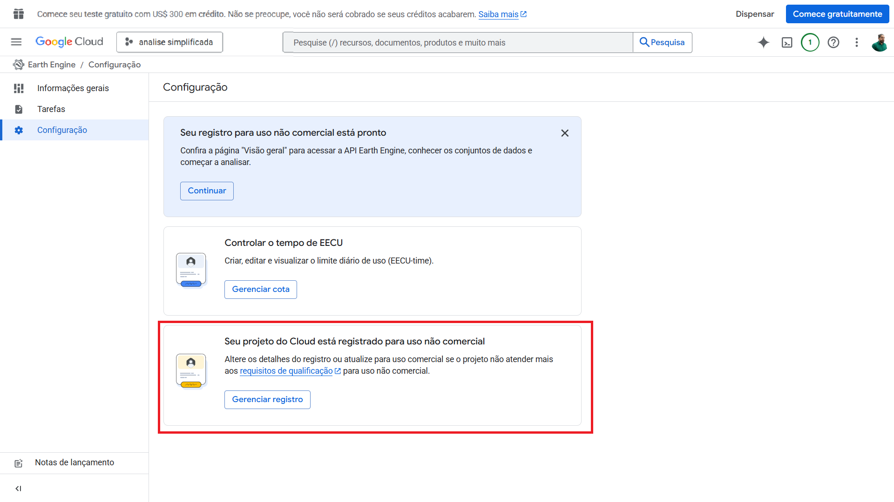
Selecionar o Tipo de Organização
Ação: Início do formulário de cadastro.
Detalhe: Agora começa o formulário de cadastro para pesquisadores/estudantes. No passo 1 do formulário, selecione a categoria que melhor te define, por exemplo: "Instituição acadêmica pública ou particular (incluindo professores...)". Clique em "Próximo".
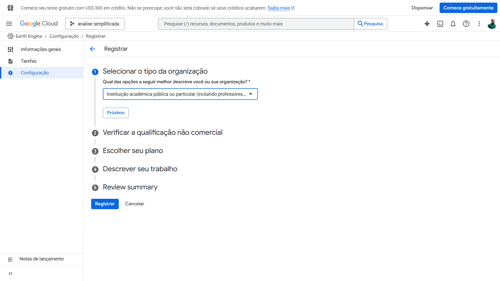
Preencher Dados do Trabalho
Ação: Justificar o acesso gratuito.
Detalhe: Aqui você justifica por que precisa do acesso gratuito:
- Instituição: Coloque o nome da sua universidade ou órgão
- Pagamento: Marque "Não" (essencial para essa licença)
- Uso: Marque "Pesquisa científica"
- Pergunta de pesquisa: Descreva brevemente o que vai analisar
- Região: Defina como "Regional" e escreva o local da sua pesquisa
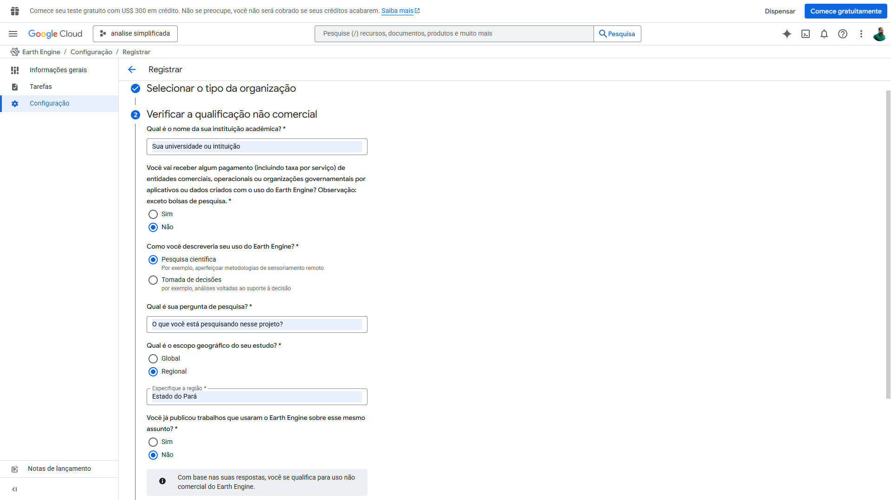
Marcar Áreas de Interesse
Ação: Definir temas de pesquisa.
Detalhe: Marque as caixas relacionadas ao seu estudo, como "Proteção e conservação". Selecione a atividade principal no menu suspenso (ex: Água doce...).
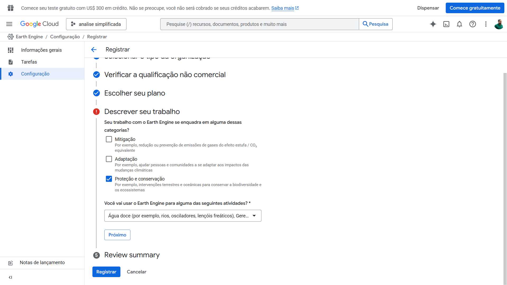
Confirmar e Registrar
Ação: Revisão final.
Detalhe: Revise o resumo (Review summary). Clique no botão azul "Registrar".
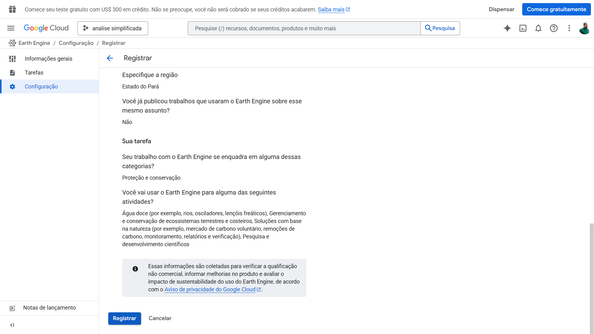
Ativação Obrigatória
Ação: Ativação obrigatória.
Detalhe: Ao clicar em registrar, um pop-up aparecerá pedindo para ativar as APIs obrigatórias. Clique em "Ativar" para conectar o Earth Engine ao seu projeto.
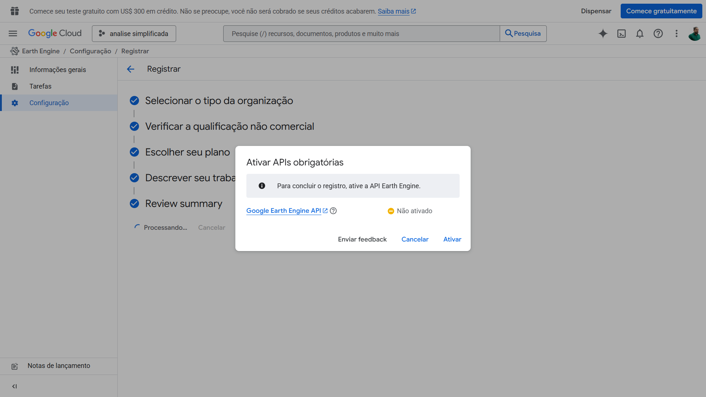
Importante
Sem a ativação da API, você não conseguirá executar scripts ou acessar os datasets do Earth Engine. Aguarde a conclusão desta etapa antes de prosseguir.
Confirmação de Sucesso
Ação: Confirmação de sucesso.
Detalhe: Aguarde a mensagem "Seu registro para uso não comercial está pronto". Clique em "Continuar".
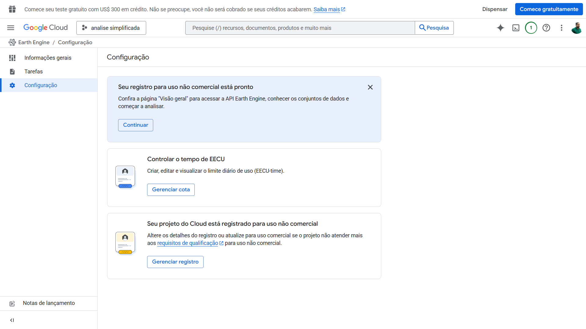
Voltar ao Ambiente de Código
Ação: Voltar ao ambiente de código.
Detalhe: Na tela de visão geral ("Este é o Earth Engine"), vá até o cartão "Conectar" e clique no link "editor de código" para abrir a interface de programação.
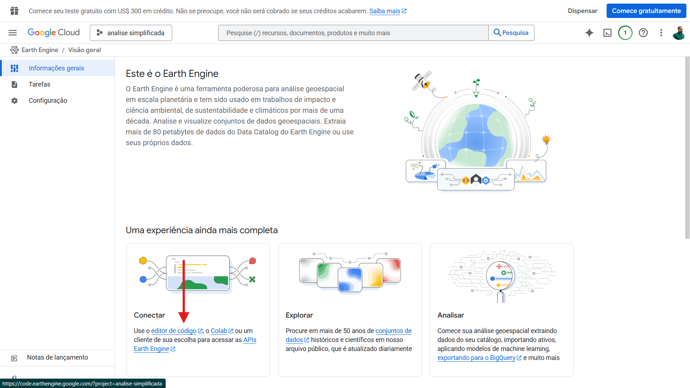
Visualização do Editor
Ação: Visualização do editor.
Detalhe: Agora você está no ambiente de desenvolvimento, pronto para criar scripts e gerenciar arquivos.
Esta é a tela principal do Code Editor, dividida em três áreas principais:
- Esquerda: Gerenciador de Scripts e Assets (seus arquivos e shapefiles)
- Centro: Editor de código JavaScript
- Direita: Console (resultados), Inspector (informações do mapa) e Tasks (tarefas de exportação)
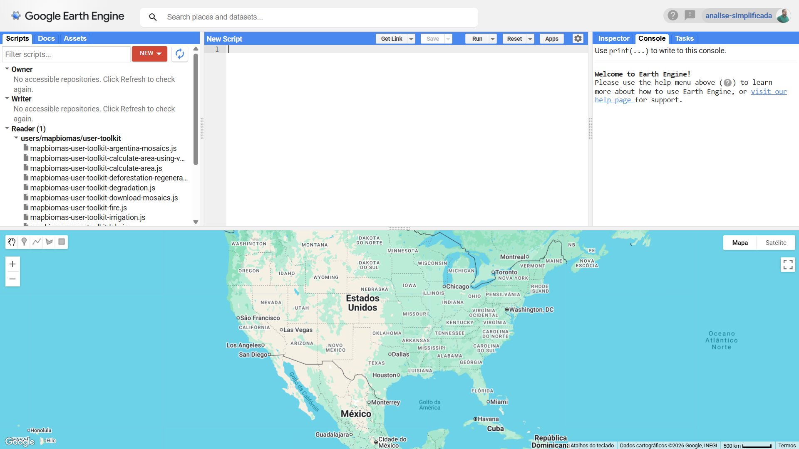
Iniciar Upload de Dados
Ação: Iniciar upload de dados.
Detalhe: Na aba "Assets" (esquerda), clique em "NEW" e depois em "Shapefile". Clique em "SELECT" e escolha todos os arquivos do seu shapefile (.shp, .dbf, .shx, .prj).
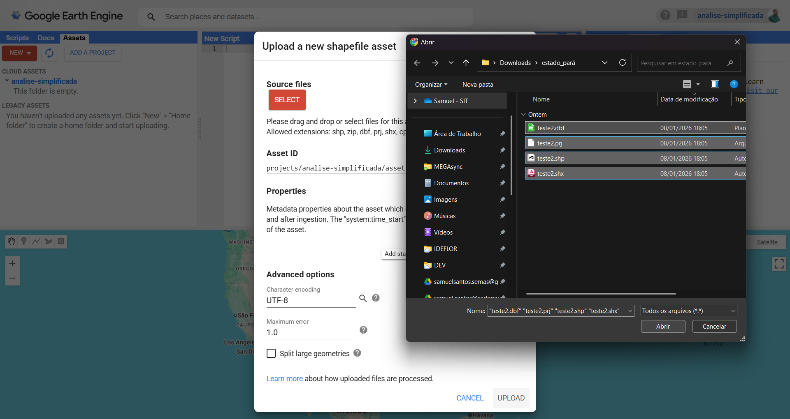
Formatos Aceitos
O GEE aceita shapefiles, GeoJSON, KML e arquivos CSV com coordenadas. Para shapefiles, todos os componentes (.shp, .shx, .dbf, .prj) devem ser enviados simultaneamente.
Configurar o Asset
Ação: Configurar o asset.
Detalhe: Dê um nome ao arquivo (ex: estado-do-para) no campo "Asset ID" e clique no botão azul "UPLOAD".
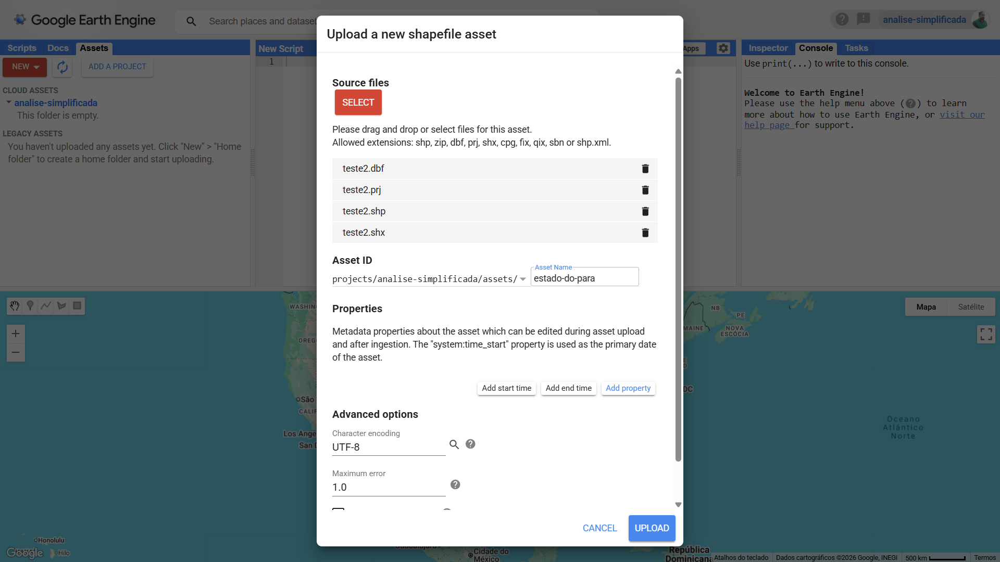
Monitorar Processamento
Ação: Monitorar processamento.
Detalhe: Acompanhe a barra de progresso na aba "Tasks" (direita) até que o processo "Ingest table" esteja concluído (azul).
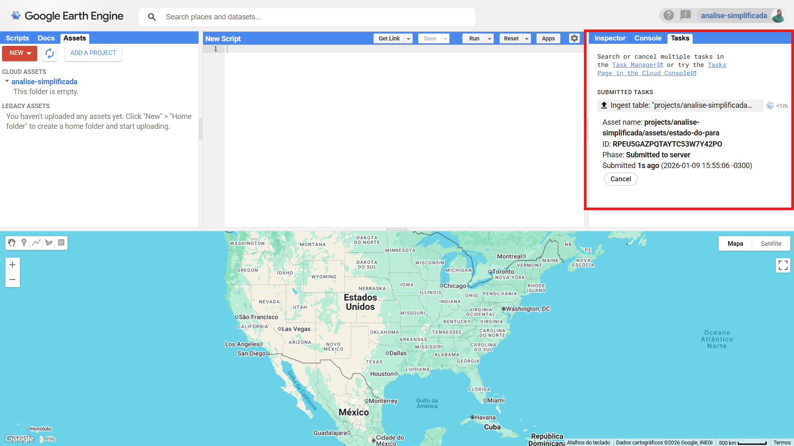
Tempo de Processamento
O tempo varia de segundos a minutos, dependendo do tamanho e complexidade da geometria. Shapefiles simples de estados ou municípios geralmente processam em menos de 1 minuto.
Obter o ID do asset
Ação: Obter o ID do asset.
Detalhe: Atualize a lista de Assets, clique no novo arquivo estado-do-para e copie o caminho dele clicando no ícone de prancheta ao lado de "Table ID".
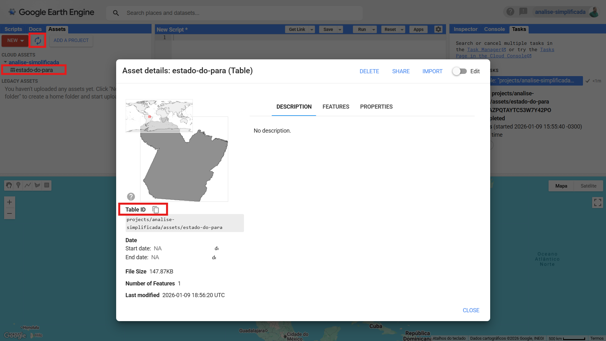
Rodar o Script
Ação: Executar o primeiro script.
Detalhe: Cole o código abaixo no editor central, substituindo o ID do asset pelo que você copiou no passo anterior, e clique em "Run" para visualizar o polígono no mapa.
// 1. Carregar o asset
// Definimos o caminho do seu polígono
var roi = ee.FeatureCollection("projects/analise-simplificada/assets/estado-do-para");
// 2. Centralizar a visualização
// O comando foca o mapa no seu polígono com um zoom automático
Map.centerObject(roi, 6);
// 3. Opção A: Visualização Simples (Preenchida)
// Exibe o polígono com uma cor sólida
Map.addLayer(roi, { color: 'blue' }, 'Estado do Pará (Preenchido)');
// 4. Opção B: Visualização de Contorno (Mais recomendada)
// Cria um estilo apenas com a borda vermelha e fundo transparente
var empty = ee.Image().byte();
var outline = empty.paint({
featureCollection: roi,
color: 1,
width: 2
});
Map.addLayer(outline, { palette: 'red' }, 'Estado do Pará (Contorno)');Entenda o código
1. Carregar o Asset:
• var roi cria uma variável chamada "roi" (Region of Interest)
• ee.FeatureCollection() carrega um asset de geometria vetorial
• Substitua o caminho pelo Table ID que você copiou no passo anterior
2. Centralizar o Mapa:
• Map.centerObject(roi, 6) centraliza o mapa na área do polígono
• O número 6 é o nível de zoom (quanto menor, mais afastado)
3. Visualização Preenchida:
• Map.addLayer() adiciona uma camada ao mapa
• { color: 'blue' } define a cor de preenchimento azul
• 'Estado do Pará (Preenchido)' é o nome da camada no painel
4. Visualização de Contorno:
• ee.Image().byte() cria uma imagem vazia
• .paint() "pinta" o contorno do polígono na imagem
• featureCollection: roi define qual geometria desenhar
• width: 2 define a espessura da linha em pixels
• palette: 'red' define a cor do contorno em vermelho
Resultado Esperado
O mapa abaixo do editor deve centralizar na região do seu shapefile. Você verá duas camadas no painel de camadas (lado direito): uma com preenchimento azul e outra apenas com o contorno vermelho. Você pode ligar/desligar cada uma clicando nas checkboxes ao lado dos nomes.
Vantagens do Google Earth Engine
- Processamento na Nuvem: Não precisa baixar gigabytes de imagens de satélite, todo o processamento é feito nos servidores do Google
- Catálogo Massivo: Acesso gratuito a mais de 40 anos de dados de satélite (Landsat, Sentinel, MODIS) e datasets climáticos
- Escalabilidade: Processe análises de municípios até continentes inteiros sem se preocupar com capacidade de hardware
- Colaboração: Compartilhe scripts e assets facilmente com colaboradores ou publique seus códigos
- APIs em Python e JavaScript: Use tanto o Code Editor (JavaScript) quanto a biblioteca Python (ee) em notebooks
Baixe os Arquivos do Tutorial
Acesse o repositório no GitHub para baixar o script JavaScript completo e shapefiles de exemplo para praticar.
Ver no GitHubConclusão
Parabéns! Você concluiu a configuração completa do Google Earth Engine e já executou seu primeiro script de visualização. Agora você tem acesso a uma das plataformas mais poderosas para análise de dados geoespaciais do mundo.
A partir daqui, explore o catálogo de datasets, experimente filtros temporais, realize cálculos de índices de vegetação (NDVI, EVI) e crie mapas temáticos. O GEE abre portas para análises que seriam impossíveis em computadores convencionais. Continue praticando e compartilhe suas descobertas com a comunidade!